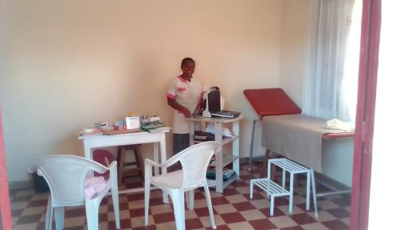
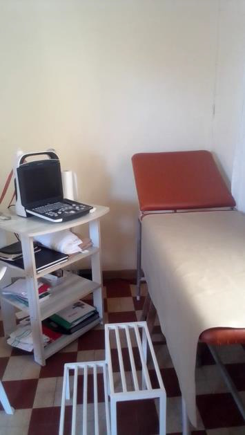

Jahresbericht 2024
Liebe Mitglieder des Vereins, liebe Helfer, Spender und Unterstützer!
2024 haben wir als Verein solide gewirtschaftet, sind erfolgreich mit den Haushaltsmitteln umgegangen und können wieder Erfolge vorweisen. So wurden auch deutlich mehr als die Jahreseinnahmen von 19.566,- Euro reinvestiert.
Die Situation in Madagaskar
Die Situation in Madagaskar änderte sich nicht. Die statistischen Bilanzen des Landes sind ernüchternd.
2023 gab es 30,3 Mill. Einwohner, Tendenz steigend. Bei einer Lebenserwartung von 65 Jahren sind mehr als ein Drittel der Bevölkerung jünger als 15 Jahre, nur 3,4% älter als 64. Politisch gab es keine Veränderungen. Die Trockenheit seit 2021 führte vorwiegend im Süden zu einer anhaltenden Hungersnot. Lt. Wikipedia steht Madagaskar im Demokratieindex auf Platz 83 von 167, bei Korruption auf Platz 140 von 181. Die Inflation pegelte sich 2024 bei 7,6% ein.
Centre Medical de Taolagnaro in Fort Dauphin
Dr. Jane Olivier hatte um Unterstützung bei der Anschaffung eines Defibrillators und für dringend notwendige bauliche Reparaturarbeiten gebeten. So halfen wir mit einer beachtlichen Summe von 17.150 Euro.
TATIRANO-Trinkwasserprojekt Grundschule EPP Manambaro
Nach den umfangreichen Investitionen für die Installation weiterer hybrider Regenwasser-Sammelsysteme für Trink- und Waschwasser. (siehe Berichte der Vorjahre) waren die Investitionen noch nicht komplett umgesetzt, so dass wir uns mit weiteren Projekten zurückhielten.
Tuléar: Hebammenpraxis von Sandrine Raveloasarioa
Die Gründung einer selbstständigen Hebammenpraxis von Sandrine Raveloasarioa hatten wir bereits Ende 2023 finanziell unterstützt. Um einen reibungslosen Start zu ermöglichen unterstützen wir die Hebamme zunächst mit einem monatlichen Gehaltszuschuss und im September mit weiteren Investitionen von 5000,- Euro.


Spendeneinnahmen und Dank
Die Spendeneinnahmen sind seit vielen Jahren stabil und nicht zurück gegangen. Das verdanken wir neben der Tätigkeit der Vereinsmitglieder wie immer zahlreichen uneigennützigen Spendern. Dafür sagen wir allen Helfern des „Melzer-Madagaskar-Projekt e.V." herzlichen Dank.
Bitte helfen Sie auch weiterhin.
Aktuelle Infos, Spendenhinweise u. Fotos unter: www.melzer-madagaskar-projekt.de